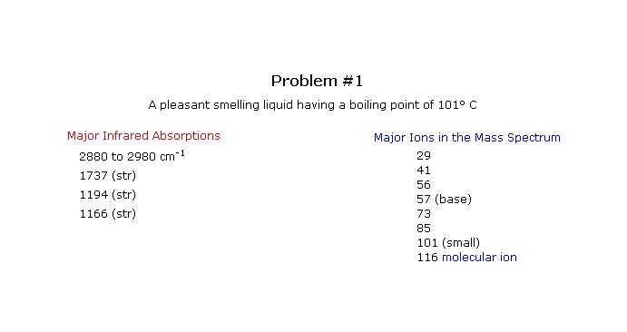

The following four problems test your ability to interpret infrared and mass spectra of an unknown compound. The first three problems are straightforward, but the fourth is more challenging. Select a problem by checking a radio button, and then click the "Show the Selected Problem" button. The actual spectra may be examined by clicking one of the designated buttons. Once you have deduced the structure of the unknown, write its name in the designated answer box near the bottom of the page and check it by clicking the "Check Answer" button. Be careful to enter the names correctly, with all commas and dashes in place. Common names and IUPAC names are accepted.
